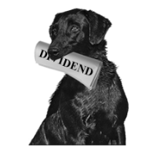

DOGS OF THE DOW IS AN INVESTMENT STRATEGY THAT ATTEMPTS TO BEAT THE DOW JONES INDUSTRIAL AVERAGE (DJIA) EACH YEAR BY LEANING PORTFOLIOS TOWARD HIGH-YIELD INVESTMENTS. THE GENERAL CONCEPT IS TO ALLOCATE MONEY TO THE 10 HIGHEST DIVIDEND-YIELDING, BLUE-CHIP STOCKS AMONG THE 30 COMPONENTS OF THE DJIA. THIS STRATEGY REQUIRES RE-BALANCING AT THE BEGINNING OF EACH CALENDAR YEAR. DOGS OF THE DOW RELIES ON THE PREMISE THAT BLUE-CHIP COMPANIES DO NOT ALTER THEIR DIVIDEND TO REFLECT TRADING CONDITIONS AND, THEREFORE, THE DIVIDEND IS A MEASURE OF THE AVERAGE WORTH OF THE COMPANY. IN CONTRAST, THE STOCK PRICE DOES FLUCTUATE THROUGHOUT THE BUSINESS CYCLE. THIS SHOULD MEAN THAT COMPANIES WITH A HIGH DIVIDEND RELATIVE TO STOCK PRICE ARE NEAR THE BOTTOM OF THEIR BUSINESS CYCLE, SO THEIR STOCK PRICE LIKELY WOULD INCREASE FASTER THAN COMPANIES WITH LOW DIVIDEND YIELDS. IN THIS SCENARIO, AN INVESTOR REINVESTING IN HIGH-DIVIDEND-YIELDING COMPANIES ANNUALLY SHOULD OUTPERFORM THE OVERALL MARKET.
